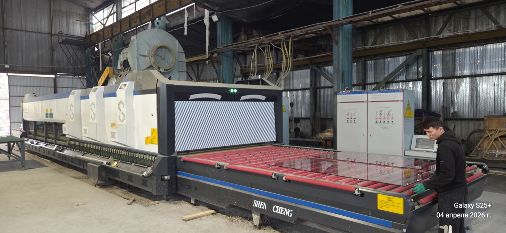
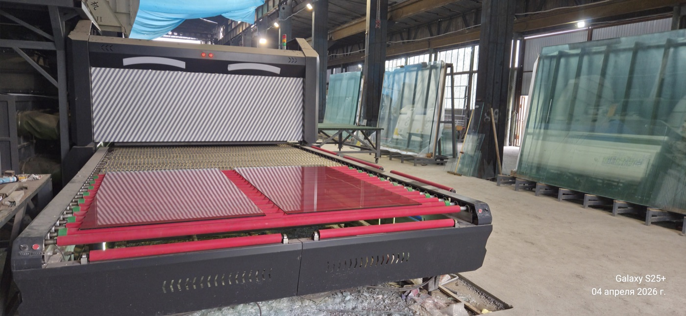
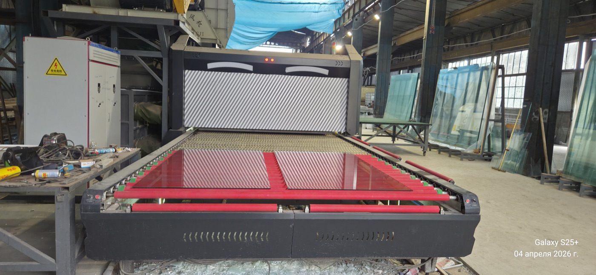
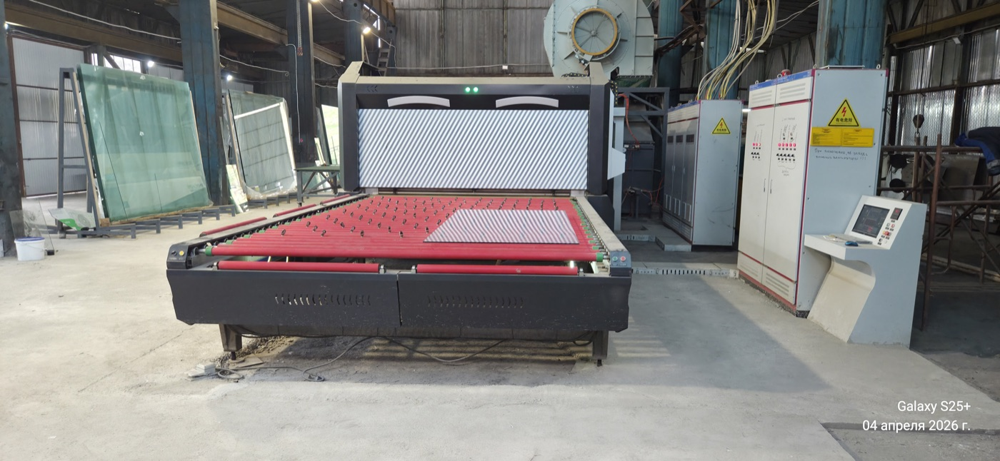
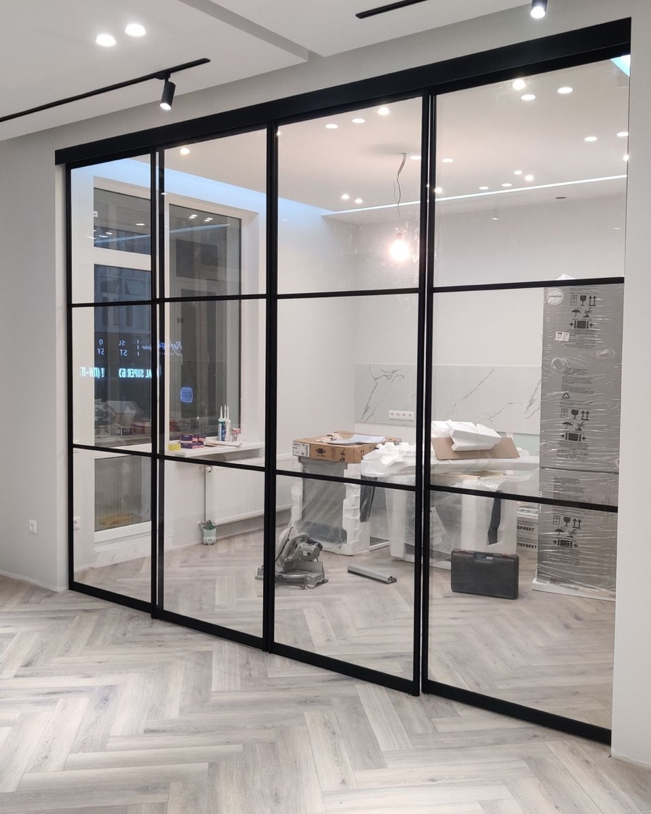
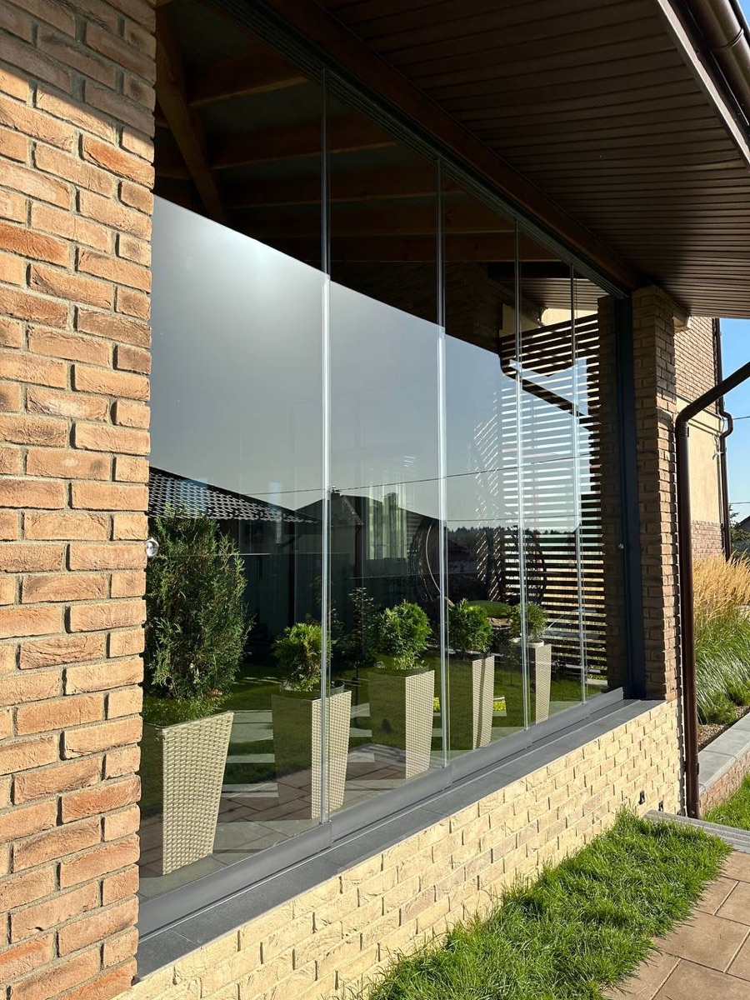
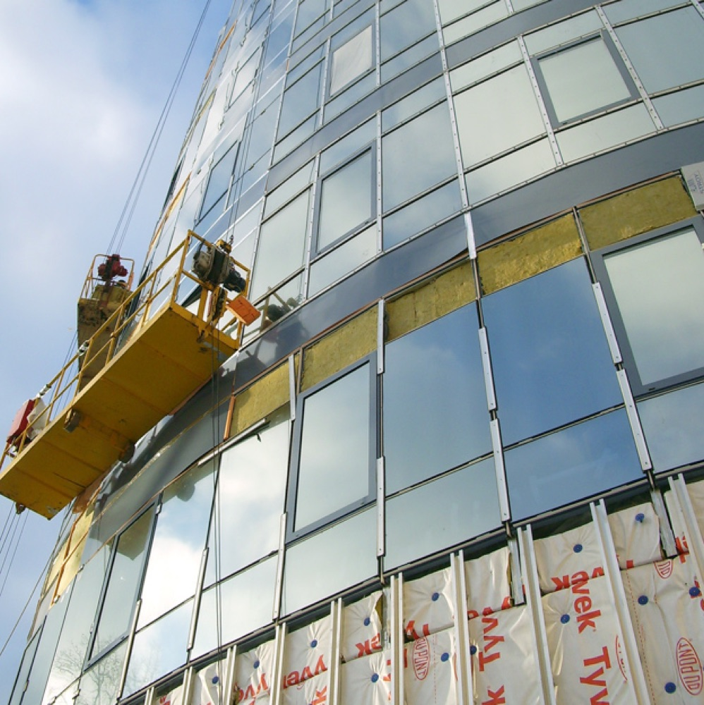
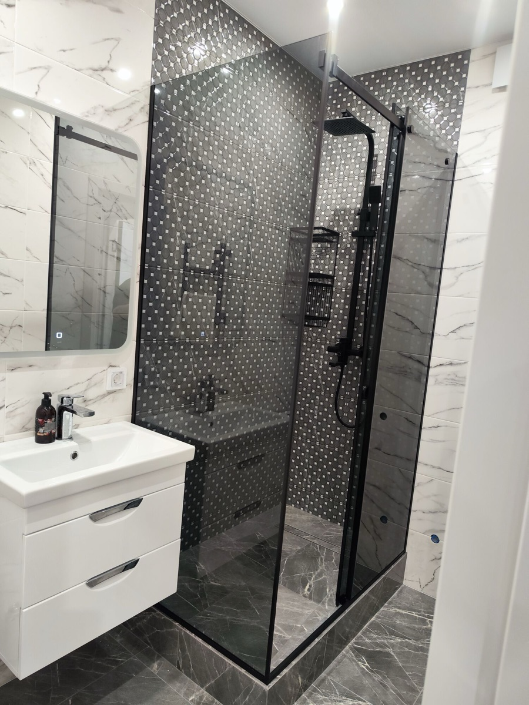
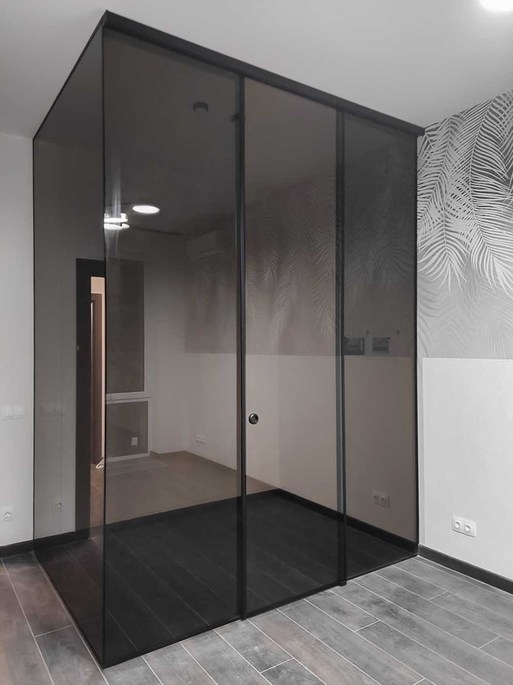
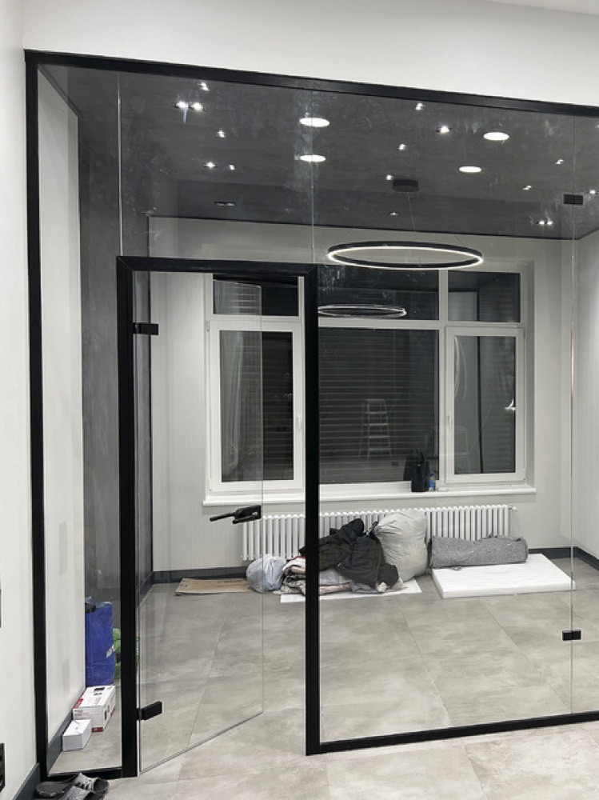

Собственный завод закалки стекла, алюминий и ПВХ любой сложности, перегородки, перила и фасады под ключ.
От окна для квартиры до структурного фасада — всё производим и монтируем сами.
Закалочная линия SHEN CHENG, линия стеклопакетов и гидроабразивная резка. Производим стекло сами — без посредников, под наши же объекты.

Линия закалки SHEN CHENG Цех
Закалённое стекло на выходе Цех
Стекло 4–10 мм в печи Производство
Свой производственный цехСвой завод закалки и конструкторский отдел позволяют держать качество, сроки и честную цену под контролем.
Бесплатный выезд с расчётом.
Подбор профиля, фиксация цены.
Своё оборудование, закалка стекла.
Установка по ГОСТ/ISO.
Перегородки в стиле лофт, душевые кабины, остекление террас и фасады — реальные объекты в Оше и по Кыргызстану.

Лофт-перегородка в чёрной раме Остекление
Безрамное остекление террасы Фасады
Фасадное остекление здания Душевые
Душевая кабина в чёрной раме Перегородки
Угловая перегородка с тонировкой Перегородки
Стеклянная комната в стиле лофтНесколько отзывов от заказчиков из Оша и других городов Кыргызстана.
«Поставили панорамное остекление террасы и стеклянные перила. Сделали свой замер, всё рассчитали честно, смонтировали без задержек. Стекло реально качественное — видно, что своё производство.»
«Заказывали лофт-перегородку и душевую кабину в чёрном профиле. Приехали на замер, предложили варианты, сделали ровно как на эскизе. Очень довольны, рекомендую.»
«Делали фасадное остекление для нашего здания. Грамотный расчёт, аккуратный монтаж на высоте, гарантия на работы. Сроки выдержали — для бизнеса это главное.»